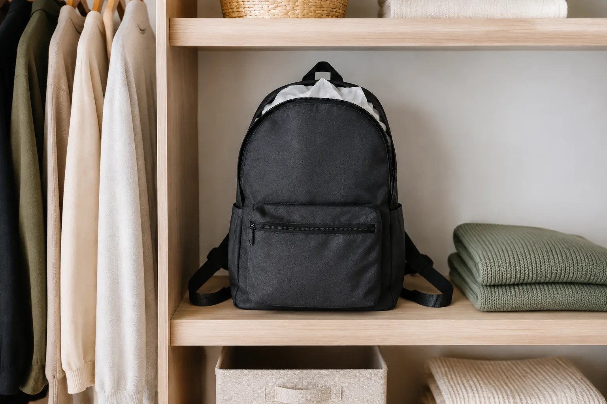

한동안 쓰지 않을 백팩의 빈자리 만들기

한동안 쓰지 않을 백팩은 짐이 들어 있는 상태로 선반 한쪽에 남기 쉽습니다. 나중에 꺼내면 오래된 종이나 작은 소지품이 그대로 있고 다른 물건 아래에 놓였던 면도 살펴야 합니다. 보관 준비는 가방을 접을지 세워둘지 결정하기 전에 안에 남은 것을 비우는 일에서 시작할 수 있습니다. 현재 상태를 확인하고 제품의 보관 안내에 맞는 자리를 정해야 합니다. 사용하지 않는 기간에도 가방은 주변 물건과 닿는 형태로 놓입니다.
모든 실제 주머니를 열어 개인 물건을 꺼냅니다. 열쇠와 카드처럼 다시 사용할 것은 평소 위치로 옮기고, 오래된 종이와 빈 포장은 필요한지 구분합니다. 개인 이름표와 장식을 계속 달아둘지도 결정할 수 있습니다. 큰 공간만 비운 뒤 보관하면 작은 칸을 다음 사용 때 다시 확인해야 할 수 있으므로 실제 여밈을 하나씩 살펴보세요. 분리 가능한 부품이 있으면 안내된 범위에서 확인하되 보관하려고 고정된 부분을 임의로 빼지는 않습니다.
보관할 현재 상태
최근에 비를 맞거나 사용한 물건의 물기가 닿았다면 남은 상태를 확인합니다. 세척하거나 건조할 조건은 해당 제품의 관리 표시를 따릅니다. 겉면만 보지 않고 접힌 안쪽과 바닥 모서리, 주머니를 살펴보세요. 보관을 서두르기보다 관리가 필요한 부분을 먼저 구분하면 다음에 가방을 꺼낼 때 다시 처리할 범위가 줄어듭니다. 라벨에서 확인하기 어려운 부위가 있다면 제품 정보와 현재 상태를 준비해 문의할 수 있습니다.
가방을 빈 상태로 놓았을 때 어떤 면이 안쪽으로 접히는지도 볼 수 있습니다. 원래 부드럽게 접히는 형태와 무리하게 눌리는 모양을 구분해 생각합니다. 제품의 보관 설명이 있다면 그 조건을 먼저 따르세요. 모양을 받칠 물건이 필요한 경우에도 가방을 가득 채워 늘리는 것을 목표로 두지 않습니다. 안쪽에 무엇을 넣을 수 있는지 안내된 범위에서 판단하고, 닿는 면과 주변 부품에 압박이 생기지 않는 상태를 실제로 봅니다.
책이 놓인 선반 아래 칸에 백팩을 보관한다고 가정해봅니다. 가방은 들어가지만 위쪽 책을 꺼낼 때 끈이 함께 따라오는 위치라면 오래 남겨둘 자리가 되기 어렵습니다. 가방을 넣은 면과 나중에 손을 넣어 꺼낼 공간을 따로 봅니다. 옆에 상자를 놓을 경우에는 상자의 모서리가 가방을 누르는지도 살핍니다. 비어 있는 선반을 찾는 것만으로 보관이 끝나는 것은 아니므로 그 칸에서 자주 꺼내는 물건의 움직임까지 포함해 자리를 정할 수 있습니다.
보관할 물건의 예시로 Himawari No.194L 제품 정보를 참고할 수 있습니다. 모델 정보를 확인하고 자신의 가방에서 비워야 할 공간과 관리 표시를 대조합니다. 계절이 바뀌어 잠시 사용하지 않는 백팩이라면 개인 장식과 소지품을 어디로 옮길지도 생각하세요. 제품 사진은 외형을 참고할 자료이고 실제 보관할 상태는 현재 가방에서 봅니다. 다음에 꺼낼 때 바로 필요한 물건을 담을 수 있는지까지 연결하면 보관 준비의 범위가 분명해집니다.

형태를 받치는 물건의 역할
형태를 받치는 물건을 넣을 수 있는 제품이라면 목적을 먼저 정합니다. 앞면이 안으로 접히지 않게 가볍게 받치려는 것인지, 바닥의 현재 모양을 유지하려는 것인지 봅니다. 깨끗한 종이나 천을 허용하는 조건에서 사용하더라도 여밈을 닫으려고 눌러야 할 만큼 채울 필요는 없습니다. 받침을 넣기 전과 후의 외형을 나란히 보면 어느 면에 물건이 닿는지 알 수 있습니다. 넣은 받침은 나중에 제거할 물건이므로 개인 소지품과 구분해 기억해둘 수 있습니다.
개인 키링이나 장식이 붙어 있는 가방은 놓는 방향을 바꿔 비교해볼 수 있습니다. 앞면을 아래로 두면 장식이 받치는 면에 닿고, 세워두면 긴 끈이 옆 물건으로 늘어질 수 있습니다. 어느 방향을 쓸지는 제품의 보관 조건 안에서 정하되 현재 구성에서 무엇이 먼저 닿는지를 보면 됩니다. 분리할 수 있는 개인 장식은 따로 보관하는 선택도 있습니다. 원래 부품과 추가 소품이 나뉜 상태라면 다음에 다시 사용할 때 어떤 것을 연결할지도 알아보기 쉽습니다.
보관용 주머니가 있다면 가방을 넣고 꺼낼 순서를 한 번 해볼 수 있습니다. 넣을 때는 들어가도 손잡이를 잡아 꺼내기 어려운 모양이면 나중에 여러 물건을 옮겨야 할 수 있습니다. 제품이 안내한 포장이 있다면 그 방식으로 사용하고 가방을 무리하게 접지 않습니다. 주머니 밖에 모델을 구분할 표식을 둘 경우에는 개인정보보다 본인이 알아볼 수 있는 내용이면 됩니다. 여러 가방이 같은 포장에 놓여 있을 때도 어떤 것을 꺼낼지 먼저 구분할 수 있습니다.
다시 꺼내는 날의 확인
보관한 가방을 다시 사용할 때는 넣어둔 받침과 포장을 먼저 꺼냅니다. 실제 주머니를 열어 남은 소지품이 없는지 확인하고 여밈과 끈을 원래 사용 방식으로 살펴봅니다. 오래 보관한 뒤의 상태가 다르게 느껴지면 제품의 관리 안내를 대조하고 필요한 문의를 할 수 있습니다. 바로 짐을 넣기 전에 가방의 안쪽과 바닥을 보면 보관 중 어떤 면이 닿았는지 알아보기 쉽습니다. 받침이 있었다면 조각이나 실이 남지 않았는지도 봅니다.
다시 담을 짐은 보관하기 전의 목록과 같지 않을 수 있습니다. 새 기기나 다른 파일을 사용하게 되었다면 실제 크기와 입구를 다시 대조합니다. 옷차림이 바뀌었을 경우에는 메고 벗는 동작도 확인할 수 있습니다. 보관을 잘 마쳤다는 생각과 현재 짐에 맞는지 판단하는 일은 각각 필요합니다. 평소 사용할 묶음을 담은 상태에서 여밈이 자연스럽게 닫히고 소지품을 찾을 수 있는지 살펴보면 다시 일상 가방으로 돌아올 준비가 됩니다.
보관 장소를 바꿀 기회가 있다면 꺼낼 때 불편했던 부분을 기준으로 정할 수 있습니다. 다른 상자를 먼저 들어내야 했는지, 끈이 옆 물건에 걸렸는지, 넣어둔 받침을 찾기 어려웠는지를 남깁니다. 다음에는 가방 하나의 외형보다 그 선반의 사용 순서를 함께 고려하면 됩니다. 내용물을 비우고 현재 상태를 관리한 뒤 주변 물건이 누르지 않을 자리에 놓는 과정이 이어져야, 다음 사용에서도 가방과 개인 짐을 각각 찾기 쉽습니다.